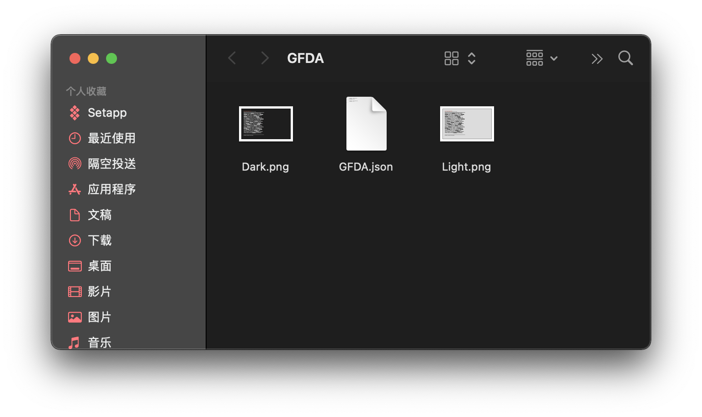

使用 Wallpapper 制作动态壁纸
很久之前，我受 Good Fucking Design Advice 启发，想做一套随系统主题切换的壁纸。四处搜索，找到了 Wallpapper。考虑到 Wallpapper 的 GitHub 页面只提供了英文版的使用说明，这篇文章就用中文介绍一下 Wallpapper 怎么用。
安装
安装 Wallpapper 最简单的方法是通过 Homebrew。打开终端，在根目录下（也就是默认目录）输入
1 | brew tap mczachurski/wallpapper |
切换至开发者的 tap（第三方托管库，third-party repository），执行完成后输入
1 | brew install wallpapper |
Homebrew 便会开始安装，待安装完成后即可开始使用。
使用
首先，在比较好访问的地方创建一个文件夹，文件夹中应包括：
- 打算制作动态壁纸的图片素材；
- 一个 JSON 文件，供 Wallpapper 制作壁纸用。
由于我打算制作根据系统主题切换的壁纸，于是我在根目录创建了名为 GFDA 的文件夹，其中放了亮色与暗色壁纸各一张。还新建了一个空的 JSON 文件，为方便起见，起了和文件夹同样的名字：

使用文本编辑器打开这个 JSON 文件，给每一张壁纸素材指定参数。如果要制作根据主题颜色变换的壁纸，对应的参数格式可以是：
1 | [ |
其中，"isPrimary" 决定这张图片是否成为壁纸选择界面显示的图像；"isForLight" 与 "isForDark" 则顾名思义，决定这张图片用在那种主题模式下。JSON 文件写好后，在终端里使用 cd 命令进入这个目录：
1 | cd GFDA |
并在该目录下运行 Wallpapper：
1 | wallpapper -i GFDA.JSON |
等待终端出现「Saving data to file ‘…/output.heic’…OK.」字样，即表示动态壁纸制作完成。此时文件夹内应生成了名为 output.heic 的图像文件，将其设置为壁纸即可根据主题切换。
引申：制作根据时间切换的壁纸
若要制作根据时间自动切换的壁纸，则需要修改 JSON 文件的格式，例如：
1 | [ |
其中，"time" 属性仅需关注 T 之后的时间即可，日期无需变动。例如修改为 "2012-04-23T08:00:00Z"，即表示上午 8 点切换为该壁纸。需要注意的是，这一日期格式不支持 "2012-04-23T24:00:00Z"，如需表示午夜 12 时，应写作 "2012-04-23T00:00:00Z"。
本文仅介绍 Wallpapper 最基本的用法。如需进一步了解，请访问 该项目的 GitHub 主页。文中涉及的壁纸，可以在 这个链接（提取码：yh8e）下载。
欢迎将您的想法、评论、意见、建议发送至 harveyjanson@icloud.com，请注明「讨论」字样，我会尽量回复。
使用 Wallpapper 制作动态壁纸
http://harveyjanson.github.io/2021/10/28/2021-10-28-wallpapper/